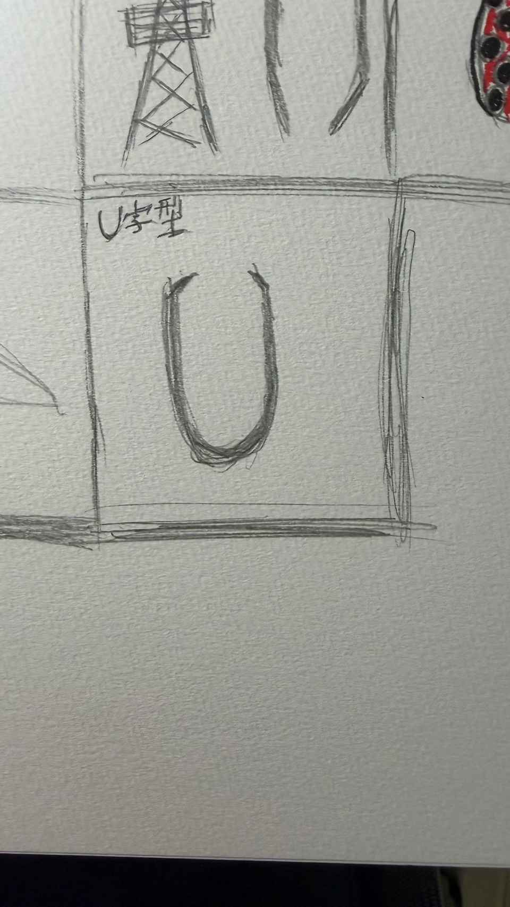
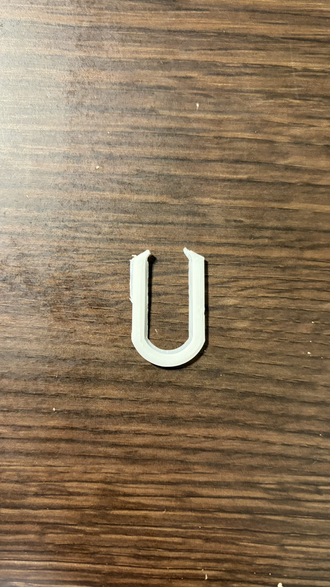

U字型ピンセット
スケッチ

実際のピンセット

設計図
作品の説明
このU字型ピンセットは、左右の先端を内側に向けて挟むことで、小さな部品などをつかむ道具である。一般的なピンセットと異なり、U字型の形状によって力を均等に加えやすく、安定して物を保持できると考えた。
なぜこれを作ろうと思ったか
一般的なピンセットでは、細かい部品をつかむ際に力加減が難しく、落としてしまうことがある。そこで、U字型の形状を利用して、少ない力でも物を挟みやすく、安定して保持できる道具を作ろうと考えた。